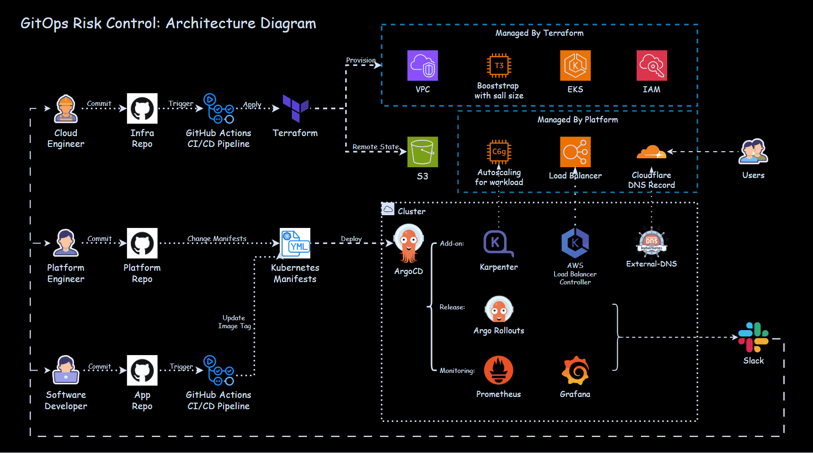
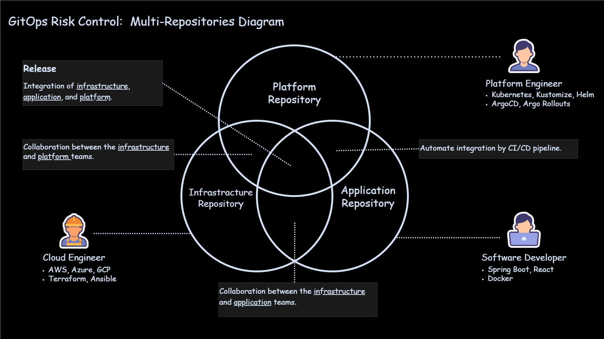
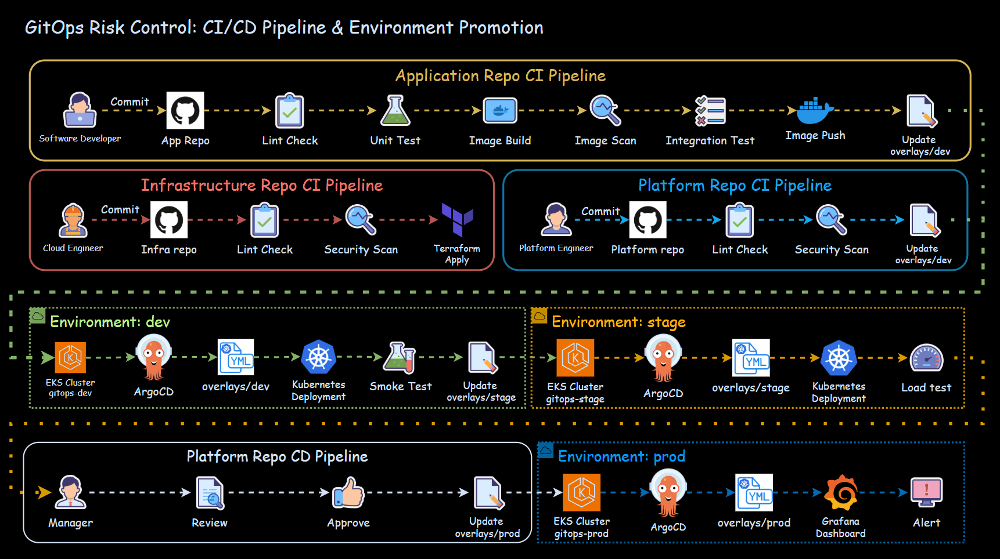
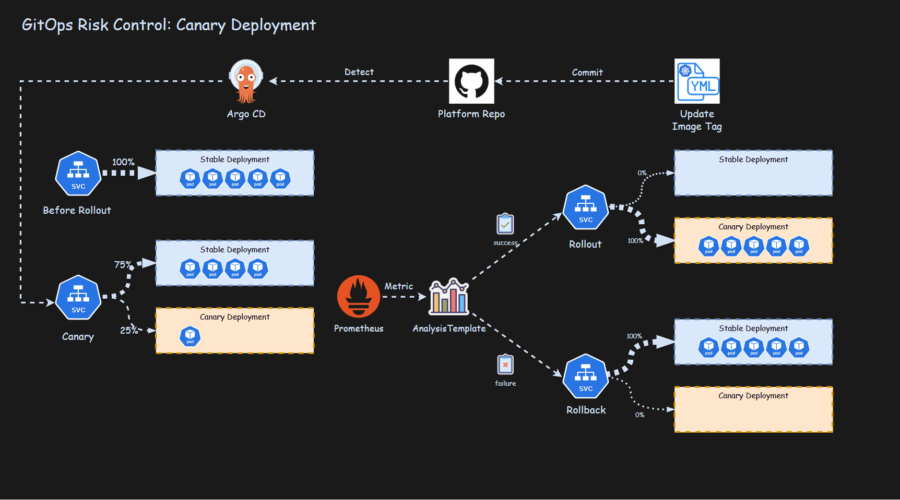
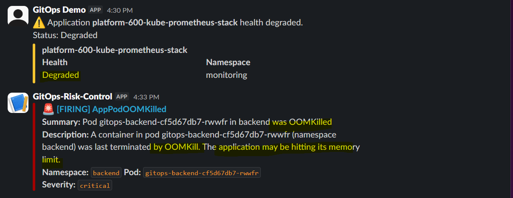
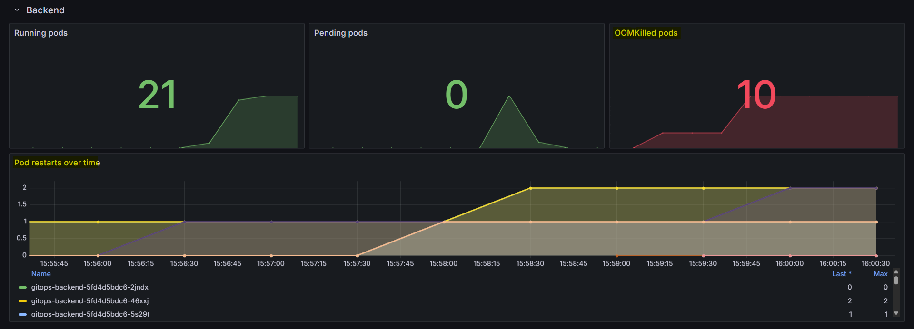
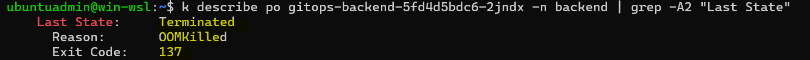
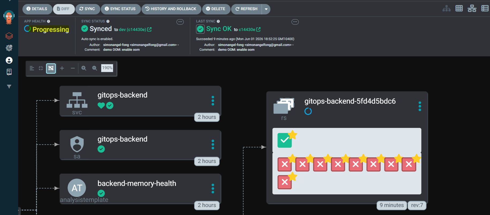
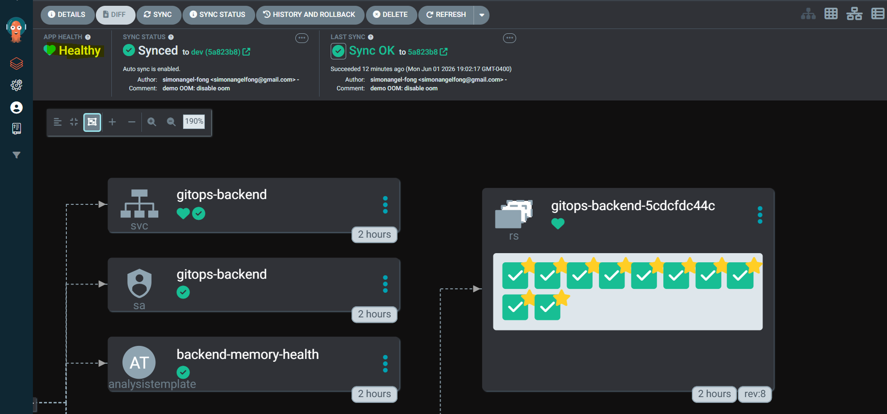

GitOps Risk Control: Protecting the business through safer software releases.
Every production release is a moment of risk — for customers, for operations, and for the bottom line. This GitOps project shows how a structured delivery process reduces that risk by validating changes early, releasing them gradually, and detecting issues fast.
When a release goes wrong, the business pays.
A failed release isn't just a technical event. It interrupts customers, distracts the team, and erodes trust in the delivery process. The question for the business is not whether to release, but how to release in a way that limits the consequences when something does go wrong.
A three-phase approach
Risk shows up at three different points in the release lifecycle. Each one calls for a different control.
Validate early
Separate ownership across teams, and rehearse every change in isolated environments before it gets near production.
Release gradually
Roll out new versions to a small slice of traffic first, with automatic rollback if the rollout shows signs of failure.
Detect fast
Watch the live system continuously and notify the team the moment something unusual happens.

Catching issues before they reach customers.
Most production incidents have roots earlier in the process — in unclear ownership, rushed changes, or environments that don't reflect reality. The pre-release phase addresses each of these directly.
Clear ownership through dedicated repositories
Splitting the work across three repositories establishes clear ownership boundaries between teams. Each team works in its own space, reviews its own changes, and is accountable for its own quality — which reduces coordination friction and makes the audit trail unambiguous.

| Repository | Owner | Responsibility |
|---|---|---|
| Platform | Platform engineering | Cluster add-ons, deployment configuration, rollout policy, monitoring, and notifications |
| Application | Software engineering | Application source code, builds, and deployment triggers |
| Infrastructure | Cloud engineering | Cloud infrastructure, clusters, and networking foundation |
Three environments, three levels of scrutiny
Changes pass through three separate environments before reaching customers. Each is fully isolated — different infrastructure, different configuration, different purpose. So problems are contained where they occur.
| Environment | Purpose | Character |
|---|---|---|
| Development | Early validation as work is in progress | Fast-changing and flexible |
| Staging | Production-like rehearsal before release | Test-heavy, mirrors production closely |
| Production | The live environment customers use | Stable, reliable, security-focused |
Automated promotion, with a human checkpoint where it matters
Changes move automatically from development to staging once validated. The final step into production requires explicit human approval — a deliberate friction point that keeps a release owner accountable for what goes live.

| Environment | Trigger | What happens |
|---|---|---|
| Development | Engineer commits a change | Automated validation, security checks, smoke test |
| Staging | Automatic, after development passes | Promotion, load test, validation report |
| Production | Release owner reviews and approves | Promotion, release notification, hand off to monitoring |
Limiting the risk of a bad release.
Even with thorough pre-release work, some issues only appear in production. The answer is not to release with more caution — it is to release in smaller, safer increments, so that a problem touches a fraction of users rather than all of them.
Three controls working together
Gradual traffic shift
A new version receives a small share of production traffic first. If it behaves correctly, the share grows.
Continuous rollout analysis
System health is checked at every step. Traffic only grows once the new version proves itself.
Automatic rollback
If health checks fail, the release is reversed automatically. The stable version is restored without manual intervention.

When the release goes well
A healthy release passes every checkpoint. Traffic moves smoothly from a small share to full production, with no manual intervention required.
When the release goes wrong
A degraded release fails the automated health checks. The system halts the rollout and reverts to the previous stable version on its own — limiting customer impact to a small fraction of traffic, for a short window of time.
Detecting incidents before they become outages.
Some problems are subtle enough to slip past every check and only appear once real customers use the new version. The goal of the post-release phase is to shorten the window between when something starts going wrong and when the team responds — what is commonly called Mean Time To Recovery.
Two complementary signals
Continuous monitoring
Dashboards visualize the health of the system in real time — what is running, what is failing, and how often things restart.
Targeted alerting
When a meaningful threshold is crossed, the on-call team is notified directly in their working channel — no inbox to monitor, no portal to check.
A worked example: a memory-related incident
Consider a release that passes every check but contains a subtle memory issue that only appears under sustained production load. Here is how the post-release process handles it.
-
1
Detect
An alert is raised the moment failing pods cross a defined threshold. The on-call engineer is notified in the team channel within seconds.

-
2
Triage
The dashboard confirms the scope of the issue — which service is affected, how widely, and how quickly the problem is escalating.

-
3
Investigate
Diagnostic output from the affected component confirms the failure condition. The cause is identified quickly because the data is already at hand.

-
4
Recover
Reverting the change in source control is enough — the platform synchronizes automatically and the previous, healthy version is restored.

Before recovery — application degraded. 
After recovery — healthy version restored.
Each risk has a matching control.
The full picture of how risk shows up at each stage of the lifecycle, and how each is addressed.
| Phase | Risk | Control | Business outcome |
|---|---|---|---|
| Pre-release | Unclear ownership across teams | Dedicated repositories per team | Clearer responsibility, less coordination friction |
| Pre-release | Production-readiness gaps | Isolated development, staging, production | Issues surface before customers see them |
| Pre-release | Bugs and security flaws | Automated validation across environments | Defects caught before promotion |
| Release | A bad version reaching all users | Gradual rollout to a fraction of traffic | Limited blast radius on failure |
| Release | Slow human response to a failing release | Automated rollout analysis and rollback | Bad releases reversed without delay |
| Post-release | Limited visibility into production | Continuous monitoring dashboards | System health is observable in real time |
| Post-release | Late discovery of incidents | Targeted alerting to the on-call team | Lower Mean Time To Recovery |